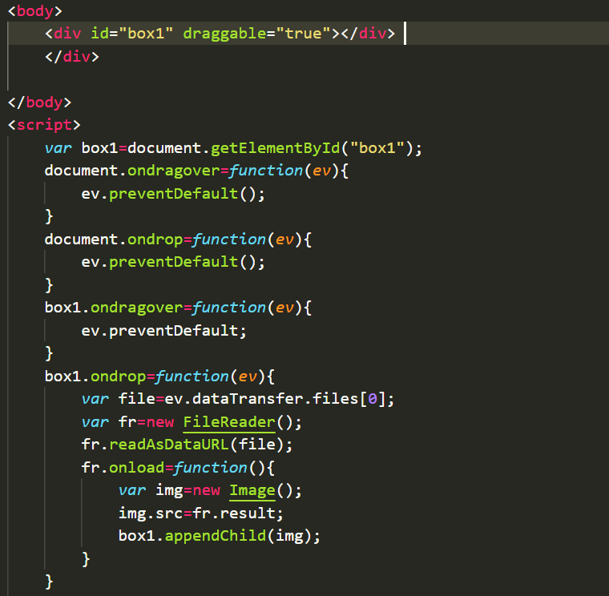

header：定义头部
nav：定义导航内容
article：定义正文内容
section：定义段落
aside：边栏内容
footer：定义页脚
embed：嵌入的内容
音频
video/audio组合source元素：可以链接不同的音频文件，也可以为同意媒体文件指定多个播放格式，浏览器将使用第一个可识别的格式
loop：循环播放，autoplay ：自动播放，controls：控制条
表单元素一定要放在from标签里面
数值文本框(number)：formaction——提交到不同页面
formmethod——不同的提交方法
required——规定输入域在提交之前必须填写
autofocus——自动聚焦
multiple——可以上传多个文件
navigator.geolocation
latitude——维度
longitude——经度
accuracy——精度
altitude——海拔
heading——方向
navigator.geolocation.getCurrentPosition(onSuccess, onError, options)
navigator.geolocaton.watchPosition()——持续监视当前地理位置
clearWatch()——清除监视
特点:离线浏览，加快速度，减少服务器负载
<html manifest="cacheData.appCache">
manifest文件分为三个部分：CACHE MANIFEST,NETWORK,FALLBACK
CACHE MANIFEST:在此标题下列出的文件会在首次加载后缓存，写在第一行，必须该有的部分
NETWORK：在此标题下的文件不会被缓存，需要与服务器连接，离线不可用
FALLBACK：获取不到缓存资源时的备选路径
调用当前应用资源的下载过程：applicationCache.update()
更新到最新缓存，不会使之前加载的资源突然被重新加载：applicationCache.swapCache()
优点：
存储空间大；
数据仅仅存在本地，不会自动向服务器发送；
提供丰富的接口，方便数据操作；
独立的存储空间，每个域都有各自的存储空间，不会造成混乱
localStorage：将数据保存在客户端本地的硬件设备中，即使浏览器被关闭了，数据仍然存在，下次打开浏览器还可以继续使用
sessionStorage：将数据保存在session对象中，当浏览器被关闭后，数据会被删除
localStorage为永久保存，而sessionStorage为临时保存
存储数据项：
localStorage.setItem(key,value)
localStorage['key']=value
localStorage.key=value
读取数据项：
localStorage.getItem(key)
localStoragep['key']
localStorage.key
删除数据项：localStorage.removeItem(key)
清除全部数据：localStorage.clear()
获取数据项的个数：localStorage.length
获取键名：localStorage.key(index)
WebSocket是HTML5提供的一种浏览器与服务器间进行全双工通讯的网络通讯协议
var socket=new webSocket("url")
WebScoket和HTTP是应用层协议，通过TCP传输数据，WebScoket是全双工通信协议，HTTP是单向的通信协议
对于WebScoket来说，它必须依赖HTPP协议进行一次握手，握手成功后，数据就直接从TCP通道传输，此后就与HTTP无关了
特点：
建立在TCP之上，服务器端的实现比较容易
与HTTP协议有着良好的兼容性
数据格式比较轻量，性能开销小，通信高效
可以发送文本，也可以发送二进制数据
没有同源限制，客户端可以与任意服务器通信
files有length和item属性，可以通过files.[index]或者files.item(index)选择文件对象
如：var file=document.getElementById('file').files[0]
FIleReader对象方法：
readAsDataURL
readAsBinaryString
readAsText
图片预览
preventDefault()——取消事件默认动作
读数据：ev.dataTransfer.getData("text")
存入数据：ev.dataTransfer.setData("text",ev.target.innerHTML)
将需要拖放的元素的draggable属性设为true：draggable="true"
img与a元素默认允许拖放
拖动事件：
dragstart——拖动开始
dragover——拖动过程中
drop——拖动结束
文件与拖放的组合运用
设置canvas元素的宽高时，不建议使用px后缀
getContext()方法
描边：context.stroke()
填充：context.fill()
圆：context.arc(x,y,r,起始角，结束角,顺/逆时针)
矩形：context.rect(x,y,width,height)
实心矩形：fillRect()
空心矩形：strokeRect()
透明度：context.globalAlpha=0.5;
线条样式：context.lineCap(butt/round/square)
画布平移：context.translate(100,100)
画布平移：context.rotate(angle)
画布缩放：context.scale(1,1)
文字方法：strokeText(),fillText()
阴影属性
渐变
径向渐变：createRadialGradient()
[id^="ha"]：选择以ha开头的id
[id$="ha"]：以ha结尾的id
[id*="ha"]：包含ha的id
:first-line ——对象的第一行
:first-letter ——对象的第一个字符
:befor ——对象前的内容，必须定义content属性
:after ——对象后的内容，必须定义content属性
:root ——匹配文档的根元素，在HTML中，根元素永远是HTML
body:not(h1) ——body中不包含h1的元素
:empty ——匹配没有任何子元素的元素
:target ——当前活动的目标元素
:first-child ——匹配父元素的第一个子元素
:only-child ——子元素是父元素的唯一元素
:nth-child(2n+1) ——可以选中第1,3,7个元素
:nth-last-child(n) ——倒数第n个元素
text-shadow(x,y,blur,color)
word-wrap：normal / break-work / break-all
break-all：允许在单词内换行
break-word：在长单词或url地址内部进行换行
background-size:length | percentage| cover | contain
背景图片的定位区域：background-origin：padding-box | border-box | content-box
背景图片的绘制区域：background-cilp：padding-box | border-box | content-box
box-shadow:x,y,blur,spread,color,inset
blur:模糊距离，spread:阴影的尺寸
inset:可选，将外部阴影改为内部阴影
线性渐变：backgroung：linear-gradient()
平移：transform：translate(x,y)
旋转：transform：rotate()
缩放：transform：scale()
倾斜：transform：skew()
反转一个图片：transform：scaleX(-1)
改变基点位置：transform-origin
要过渡的属性：transition-property
过渡时间：transition-duration
过渡效果：transition-timing-function
延迟时间：transiton-delay
transition: width 1s ease 2s,height 2s linear
动画：animation
调用动画名：animation-name
动画播放次数：animation-iteration-count：n | infinite(无限次)
列数：column-count
列宽：column-width
columns：column-count column-width
column-gap：列之间的间隔
column-rule：间隔线的宽度，样式和颜色
column-rule：3px outset red;
column-rule-width，column-rule-style，column-rule-color
dashed：虚线，solid：实线
横跨所有列：column-span：none | all;
display：flex | inline-flex;
任何一个容器都可以指定为弹性盒子，设为flex布局以后，子元素的float，clear属性将失效
定义flex项目在主轴的排列方式：flex-direction：row | row-reverse | column | column-reverse
flex-wrap：nowrap | wrap | wrap-reverse(换行，第一行在下方)
规定flex项目在主轴上的对齐方式：justify-content：flex-start | flex-end | center | space-between | space-around
在纵轴上的对齐方式：align-items：flex-start | flex-end | center | baseline | stretch
定义项目的放大属性：flex-grow：number;
定义项目的缩小属性：flex-shrink：number;
设置弹性盒伸缩基准值：flex-basis：number;
@media screen and (max-width：900px){样式代码}
Jquery必须在Bootstrap之前引入
<meta name="viewport" content="width=device-width,initial-scale=1">
container类用于固定宽度并支持响应式布局的容器
container-fluid类用于100%宽度，占据全部视窗的容器
手机：class="col-xs-n"
平板：col-sm-n
电脑：col-md-n
col-md-push：向后，col-md-pull：向前(这两个都是利用相对定位实现的)
col-md-offset-4：在原本的位置向右偏移四个列
突出显示：class=lead
被删除的文本(del/s)
下划线(u/ins)
文本左对齐：class="text-left"
右对齐：text-right，居中对齐：text-center
两端对齐：text-justify
不换行：text-nowrap
首字母大写：text-capitalize
不显示列表项符号：class='list-unstyle'
将所有列表项放于同一行：class="list-inline"
显示代码：code 和 pre(多行代码)标签
圆角图片：class="img-rounded"
圆形图片：class="img-circle"
表框圆角：class="img-thumbnail"
条纹状表格：class="table-striped"
给每个单元格添加边框：class="table-bordered"
鼠标悬停：table-hover
使表格更加紧凑：table-condensed
创建表单：
1.向form元素添加role="form"
2.把标签和控件放在一个带有 .form-group的div中，以获得最佳间距
3.向input,textarea,select添加class="form-control"
class="from-horizontal"组合栅格类：可以使label标签和空间水平排列
可为a,button,input元素添加class="btn"
按钮尺寸：btn-lg,btn-sm,btn-xs
关闭按钮：class="close"
下拉：class="caret"
引用图标：class="gyphicon gyphicon-star"
按钮组：class="btn-group"
按钮组垂直排列：class="btn-group-vertical
面包屑：class="breadcrumb"
标签页：class="nav nav-tabs"
两端对齐：nav-justified
分页：class="pagination"
翻页：class="pager"
徽章：class="badge"
<span class="badge">34</span>